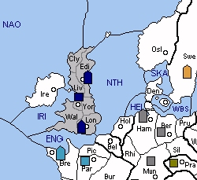

BRITAIN (B) faces a situation much like in Standard, in that it has only a few available SCs initially and it must eventually find a way to land its armies on the continent. Oslo is the nearest available SC. It can be contested by another power (Sweden) but Britain can force the situation with the Churchill opening. For the most part, Britain can be fairly certain of gaining a build in 1929 and probably a second in 1930 through the capture of Ireland.
The French fleet in Brest can be troublesome. Lacking easy gains in Iberia, it might be tempted to sortie to the Irish Sea in 1929 and grab Ireland in 1930. If this occurs, Britain might still recover Ireland in 1930, but it will involve building a fleet in Liverpool and moving a second fleet to the North Atlantic. Bouncing in the English Channel in 1929 will alleviate this problem, even by threatening Brest if France sorties to the Mid Atlantic, but at the possible expense of Oslo.
If matters bog down in northern Europe, Egypt provides a welcome alternative for expansion. Unlike some minors, Britain can safely vacate Egypt in 1929 and then build an extra unit in the winter. Two Egyptian units can harass Turkey quite effectively and possibly create a second corner position for Britain.
|
 |
MINOR (Basic): Egypt SUGGESTED MINORS (Advanced): Spain, Sweden POTENTIAL ALLIES: GERMANY versus France and Sweden (Italy) ITALY versus France and Germany POLAND versus France and Germany USSR versus Sweden (Italy) and Turkey |
Suggested Openings for Britain:
Churchill: |
A LIV-YOR/EDI, F LON-NTH, F EDI-NWG |
|
As in Standard, Britain can ensure the capture of Oslo but may require both fleets to overcome Swedish opposition. Beware of French designs on Ireland if you don’t plan to open to the English Channel. |
|
Brittania: |
A LIV-YOR/WAL, F LON-ENG, F EDI-NTH |
|
Britain asserts a strong claim to Ireland, threatening Brest if France opens to the Mid-Atlantic. USSR can’t challenge Oslo, but British occupation of Oslo may require Swedish approval. |
Before World War Two, Britain tried to appease Germany. Perhaps they should have tried an alliance instead? France and Sweden (Italy's minor) threaten both Britain and Germany, so both nations have some good reasons to work together. Early strategy might use the Brittania opening, with a British army landing in Belgium. However, assuming that Britain takes France while Germany takes Scandinavia, Britain should be careful not to let Germany build more than two fleets. As a follow-up, Britain can clean up Spain while Germany deals with Poland. Britain would likely continue south into the Mediterranean, possibly using its Egyptian forces to deal with Italy.
If German fascism doesn't suit Britain, then perhaps the Italian flavour might. In fact, an Italian alliance could help Britain resolve both the French and German questions. Italy's Swedish fleet can pressure Germany by moving to Denmark in spring 1929. Meanwhile, Britain can follow the Churchill opening and try to land its army in Belgium. As France and Germany collapse, Italy will evolve into a vertical column while Britain will seize the western edge of the board. Depending on who wins the eastern conflict, Britain can either stab Italy or sit tight for a draw. To maintain stability, Britain should limit Italy's Swedish forces to two fleets or less, instead encouraging convoys of armies to Poland. Similarly, Britain should direct its Egyptian forces against Turkey to minimize irritating Italy.
Moving east, Poland provides Britain with yet another alliance option. Either Germany or France (by virtue of Poland's Spanish forces) can be the initial target. Regardless of which target is chosen, the complicating factor in establishing new borders will be Spain, which serves as a constant thorn in Britain's side. If Poland takes France and leaves Germany to Britain, then Britain will find itself wedged in between Polish territory. Britain might advance further through Scandinavia but it will likely find its options limited. Instead, Britain should take France for itself and yield Germany to Poland. Looking ahead, this strategy will likely entail a stab for Spain in the interests of British security, unless Poland agrees to exchange Iberia for Scandinavia.
Finally, Britain might also consider a partnership with USSR. However, this is more of a mutual back-scratching affair than anything, with Britain using Egypt to help USSR fight Turkey while receiving help against Sweden and Germany in Scandinavia. The partnership is not particularly attractive for Britain, since it doesn't resolve any of its primary threats, and Britain must be concerned about Egyptian longevity once USSR conquers Turkey. However, if Britain also allies with Poland, USSR may prove to be a useful safety valve. This way, Britain can conquer Scandinavia and then wait in Sweden - prepared to tip the balance of power between Poland and USSR when needed.